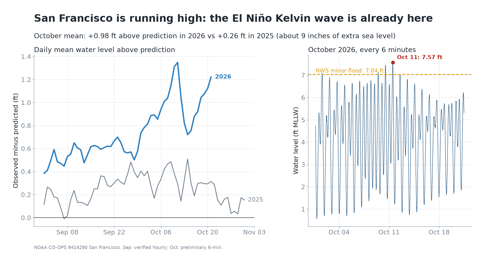
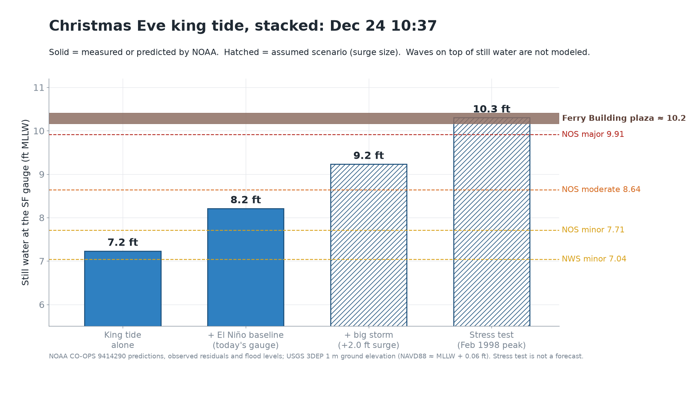
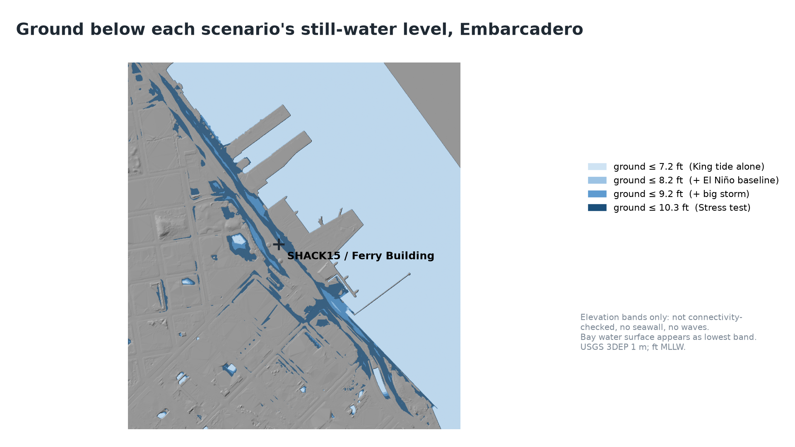
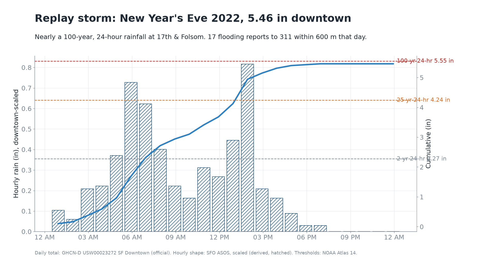
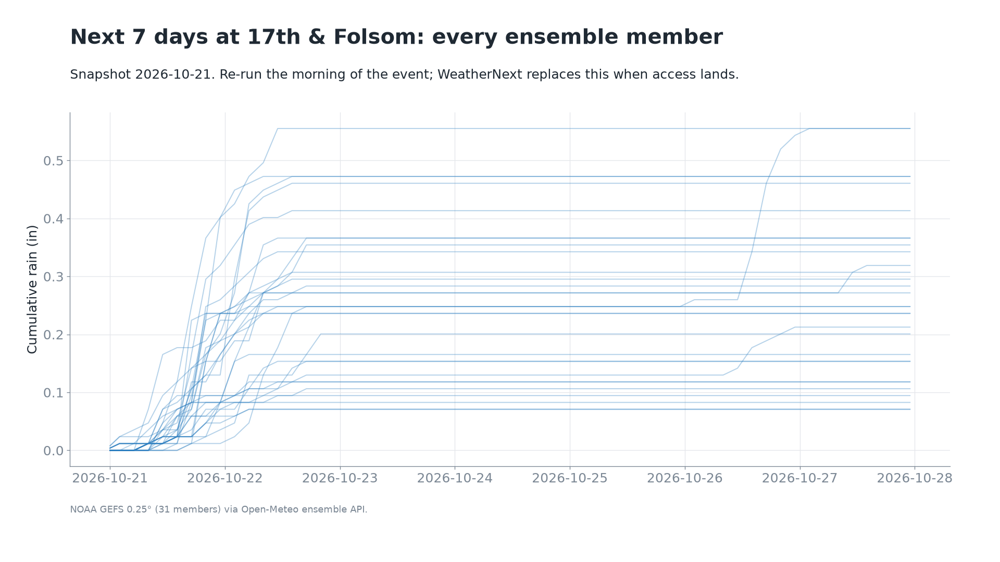

Waterline Demo Kit
Everything prepared before the Gemini 4 Argon hackathon at SHACK15 on Sunday, Oct 25: charts and maps built from live public data, terrain and ground truth for both demo sites, and the visual language for provenance. App code is written on the day.
Slide 2 · the hookThe Kelvin wave is already in the tide gauge

Observed minus predicted water level, 2026 against 2025, and the October record with the flood threshold. Rebuild the morning of the event with build_assets.py --only charts.
The opening 15 seconds: "about a foot above prediction all October."
Resident cut · Ferry BuildingChristmas Eve, stacked layer by layer

Solid bars are NOAA predictions and measurements; hatched bars are assumed surge. The realistic case sits about 2 ft below the plaza. Only the labeled stress test reaches it.
The AR toggle sequence and the "so will it flood?" answer.

Ground elevation bands only, with no connectivity check, seawall or waves. The hydraulics agent replaces this on the day.
Picking the filming spot; a backup still if AR fails.
Proof · 17th & FolsomThe replay storm and what actually flooded

5.46 in at SF Downtown, just under the Atlas 14 100-year, 24-hour depth. Hourly shape comes from SFO, so it is hatched.
Drives the replay run; the slide behind "we gave Argon a real storm."

SFPUC 100-year zone, 17 311 reports, and 10 dry-control points chosen before any modeling (seed 20261025). Not a model output.
Argon's pass/fail target; the base layer for slide 5.
Forecast fallbackEvery ensemble member, next seven days

NOAA GEFS (31 members) and ECMWF (51 members) through Open-Meteo, no key needed. A dry week right now, which is why the demo leads with the replay and the tides.
Feeds get_forecast_rain until WeatherNext access arrives.
Visual languageProvenance is a fill style, not a color
High water near the Ferry Building, Thu Dec 24, 9:30–11:45 AM. Expect water 2 ft below the promenade; waves may splash over. Avoid the seawall edge.
Marea alta cerca del Ferry Building, jue 24 dic, 9:30–11:45. El agua llegará a 2 pies del paseo; las olas pueden saltar. Aléjese del borde del malecón.
Example of the template. Waterline prototype, screening estimate only, not an official alert. For official warnings, follow AlertSF and the National Weather Service.
In the repoData products ready for the build
| Asset | Path | What it is |
|---|---|---|
| Terrain, both sites | data/terrain/ | Clipped 1 m DEM GeoTIFFs, 16-bit heightmaps and hillshades for Three.js, with georeferencing JSON |
| Ground truth | data/ground_truth/ | 311 reports, SFPUC zone clips, dry controls (GeoJSON) |
| Coastal stack | data/derived/coastal_stack.json | Each scenario layer, the thresholds and the plaza grade |
| Gauge series | data/derived/kelvin_gauge_series.json | Daily residuals 2025 and 2026, October peak |
| Ensembles | data/forecast/ | GEFS and ECMWF snapshots for both sites |
| Alert copy | assets/copy/alerts.md | Resident SMS and card, city ops brief, in English and Spanish |
| Brand | assets/brand/ | Logo and CSS tokens with the provenance styles |